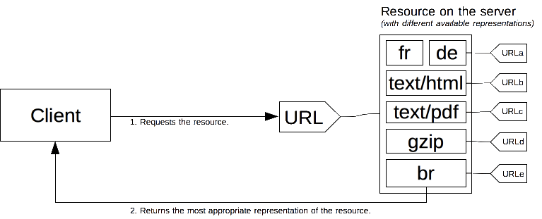
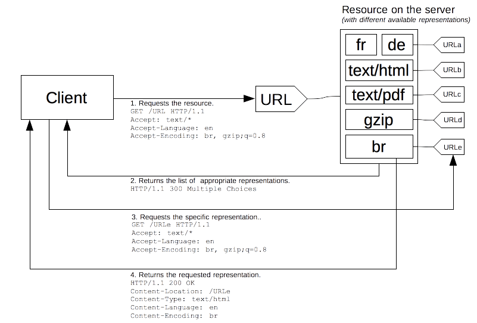

In HTTP, content negotiation is the mechanism that is used for serving different representations of a resource at the same URI, so that the user agent can specify which is best suited for the user (for example, which language of a document, which image format, or which content encoding).
Note: Some disadvantages of HTTP content negotiation are explained in a wiki page from WHATWG. HTML5 provides alternatives to content negotiation via, for example, the <source> element.
A specific document is called a resource. When a client wants to obtain a resource, the client requests it using its URL. The server uses this URL to choose one of the variants it provides – each variant being called a representation – and returns a specific representation to the client. The overall resource, as well as each of the representations, have a specific URL. How a specific representation is chosen when the resource is called is determined by content negotiation and there are several ways of negotiating between the client and the server.

The determination of the best suited representation is made through one of two mechanisms:
Over the years, other content negotiation proposals, like transparent content negotiation and the Alternates header, have been proposed. They failed to get traction and got abandoned.
In server-driven content negotiation, or proactive content negotiation, the browser (or any other kind of user-agent) sends several HTTP headers along with the URL. These headers describe the preferred choice of the user. The server uses them as hints and an internal algorithm chooses the best content to serve to the client. If it cannot provide a suitable resource, as a fallback it might respond with {{HTTPStatus("406")}} (Not Acceptable) or {{HTTPStatus("415")}} (Unsupported Media Type) and set headers for the types of media that it does support (e.g. using the {{HTTPHeader("Accept-Post")}} or {{HTTPHeader("Accept-Patch")}} for POST and PATCH requests, respectively). The algorithm is server-specific and not defined in the standard. See, for example, the Apache negotiation algorithm.
The HTTP/1.1 standard defines list of the standard headers that start server-driven negotiation (such as {{HTTPHeader("Accept")}}, {{HTTPHeader("Accept-Encoding")}}, and {{HTTPHeader("Accept-Language")}}). Though strictly speaking {{HTTPHeader("User-Agent")}} is not in this list, it is sometimes also used to send a specific representation of the requested resource, though this is not considered as a good practice. The server uses the {{HTTPHeader("Vary")}} header to indicate which headers it actually used for content negotiation (or more precisely the associated response headers), so that caches can work optimally.
In addition to these, there is an experimental proposal to add more headers to the list of available headers, called client hints. Client hints advertise what kind of device the user agent runs on (for example, if it is a desktop computer or a mobile device).
Even if server-driven content negotiation is the most common way to agree on a specific representation of a resource, it has several drawbacks:
The {{HTTPHeader("Accept")}} header lists the MIME types of media resources that the agent is willing to process. It is comma-separated lists of MIME types, each combined with a quality factor, a parameter indicating the relative degree of preference between the different MIME types.
The {{HTTPHeader("Accept")}} header is defined by the browser, or any other user-agent, and can vary according to the context, like fetching an HTML page or an image, a video, or a script: It is different when fetching a document entered in the address bar or an element linked via an {{ HTMLElement("img") }}, {{ HTMLElement("video") }} or {{ HTMLElement("audio") }} element. Browsers are free to use the value of the header that they think is the most adequate; an exhaustive list of default values for common browsers is available.
This is part of an experimental technology called Client Hints. Initial support is in Chrome 46 or later. The Device-Memory value is in Chrome 61 or later.
The experimental {{HTTPHeader("Accept-CH")}} lists configuration data that can be used by the server to select an appropriate response. Valid values are:
| Value | Meaning |
|---|---|
Device-Memory |
Indicates the approximate amount of device RAM. This value is an approximation given by rounding to the nearest power of 2 and dividing that number by 1024. For example, 512 megabytes will be reported as 0.5. |
Viewport-Width |
Indicates the layout viewport width in CSS pixels. |
Width |
Indicates the resource width in physical pixels (in other words the intrinsic size of an image). |
This is part of an experimental technology called Client Hints and is only available in Chrome 61 or later.
The {{HTTPHeader("Accept-CH-Lifetime")}} header is used with the Device-Memory value of the Accept-CH header and indicates the amount of time the device should opt-in to sharing the amount of device memory with the server. The value is given in milliseconds and it's use is optional.
The {{HTTPHeader("Accept-Encoding")}} header defines the acceptable content-encoding (supported compressions). The value is a q-factor list (e.g.: br, gzip;q=0.8) that indicates the priority of the encoding values. The default value identity is at the lowest priority (unless otherwise declared).
Compressing HTTP messages is one of the most important ways to improve the performance of a Web site, it shrinks the size of the data transmitted and makes better use of the available bandwidth; browsers always send this header and the server should be configured to abide to it and to use compression.
The {{HTTPHeader("Accept-Language")}} header is used to indicate the language preference of the user. It is a list of values with quality factors (like: "de, en;q=0.7"). A default value is often set according the language of the graphical interface of the user agent, but most browsers allow to set different language preferences.
Due to the configuration-based entropy increase, a modified value can be used to fingerprint the user, it is not recommended to change it and a Web site cannot trust this value to reflect the actual wish of the user. Site designers must not be over-zealous by using language detection via this header as it can lead to a poor user experience:
Accept-Language header, adapted to the user interface language and end users often do not modify it, either by not knowing how, or by not being able to do it, as in an Internet café for instance.Though there are legitimate uses of this header for selecting content, it is considered bad practice to rely on it to define what features are supported by the user agent.
The {{HTTPHeader("User-Agent")}} header identifies the browser sending the request. This string may contain a space-separated list of product tokens and comments.
A product token is a name followed by a '/' and a version number, like Firefox/4.0.1. There may be as many of them as the user-agent wants. A comment is a free string delimited by parentheses. Obviously parentheses cannot be used in that string. The inner format of a comment is not defined by the standard, though several browser put several tokens in it, separated by ';'.
In contrast to the previous Accept-* headers, which are sent by the client, the {{HTTPHeader("Vary")}} HTTP header is sent by the web server in its response. It indicates the list of headers used by the server during the server-driven content negotiation phase. The header is needed in order to inform the cache of the decision criteria so that it can reproduce it, allowing the cache to be functional while preventing serving erroneous content to the user.
The special value of '*' means that the server-driven content negotiation also uses information not conveyed in a header to choose the appropriate content.
The Vary header was added in the version 1.1 of HTTP and is necessary in order to allow caches to work appropriately. A cache, in order to work with server-driven content negotiation, needs to know which criteria was used by the server to select the transmitted content. That way, the cache can replay the algorithm and will be able to serve acceptable content directly, without more request to the server. Obviously, the wildcard '*' prevents caching from occurring, as the cache cannot know what element is behind it. For more information HTTP caching > Varying responses.
Server-driven negotiation suffers from a few downsides: it doesn't scale well. There is one header per feature used in the negotiation. If you want to use screen size, resolution or other dimensions, a new HTTP header must be created. Sending of the headers must be done on every request. This is not too problematic with few headers, but with the eventual multiplications of them, the message size would lead to a decrease in performance. The more precise headers are sent, the more entropy is sent, allowing for more HTTP fingerprinting and corresponding privacy concern.
From the beginnings of HTTP, the protocol allowed another negotiation type: agent-driven negotiation or reactive negotiation. In this negotiation, when facing an ambiguous request, the server sends back a page containing links to the available alternative resources. The user is presented the resources and choose the one to use.

Unfortunately, the HTTP standard does not specify the format of the page for choosing between the available resource, which prevents the process being automated. Besides falling back to the server-driven negotiation, this method is almost always used in conjunction with scripting, especially with JavaScript redirection: after having checked for the negotiation criteria, the script performs the redirection. A second problem is that one more request is needed in order to fetch the real resource, slowing the availability of the resource to the user.